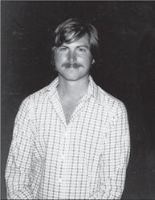

Jobs in 1982
Jef Raskin was the type of character who could enthrall Steve Jobs—or annoy him. As it turned out, he did both. A philosophical guy who could be both playful and ponderous, Raskin had studied computer science, taught music and visual arts, conducted a chamber opera company, and organized guerrilla theater. His 1967 doctoral thesis at U.C. San Diego argued that computers should have graphical rather than text-based interfaces. When he got fed up with teaching, he rented a hot air balloon, flew over the chancellor’s house, and shouted down his decision to quit.
杰夫·拉斯金是那种能让史蒂夫·乔布斯着迷——或者是厌烦的人。事实证明，两者他都做到了。拉斯金是个很有哲学家范儿的人，有时幽默顽皮，有时又呆板沉闷，他学习过计算机科学，教过音乐和视觉艺术，管理过一家室内歌剧院，还组织过街头剧场。他1967年在加州大学圣迭戈分校完成的博士论文中提出，计算机应该拥有图形界面，而不是基于文本的界面。他在厌倦了教书之后，就租了一只热气球，飞到校长家上空，大声喊出了自己的辞职决定。
When Jobs was looking for someone to write a manual for the Apple II in 1976, he called Raskin, who had his own little consulting firm. Raskin went to the garage, saw Wozniak beavering away at a workbench, and was convinced by Jobs to write the manual for $50. Eventually he became the manager of Apple’s publications department. One of Raskin’s dreams was to build an inexpensive computer for the masses, and in 1979 he convinced Mike Markkula to put him in charge of a small development project code-named “Annie” to do just that. Since Raskin thought it was sexist to name computers after women, he redubbed the project in honor of his favorite type of apple, the McIntosh. But he changed the spelling in order not to conflict with the name of the audio equipment maker McIntosh Laboratory. The proposed computer became known as the Macintosh.
1976年，乔布斯找人为AppleII编写操作手册，他给当时已经拥有一家小型咨询公司的拉斯金打了电话。拉斯金来到乔布斯的车库，看到了在工作台上埋头苦干的沃兹尼亚克，并被乔布斯说服，接受了以50美元的报酬为他们编写操作手册。后来，拉斯金成为了苹果公司出版部门的全职经理。他有一个梦想，就是为大众制造价格低廉的电脑。1979年，他说服了迈克·马库拉，成为了小规模项目“安妮”的负责人。然而拉斯金认为，用女人的名字命名电脑是带有性别歧视成分的，所以他更换了项目代号，用的是自己最喜欢的一种苹果的名字：麦金托什（McIntosh）。但为了避免与音频设备制造商麦金托什实验室（McIntoshLaboratory）的名字有冲突，他故意改变了字母的拼写。于是，新电脑的名字变成了麦金塔（Macintosh）。
Raskin envisioned a machine that would sell for $1,000 and be a simple appliance, with screen and keyboard and computer all in one unit. To keep the cost down, he proposed a tiny five-inch screen and a very cheap (and underpowered) microprocessor, the Motorola 6809. Raskin fancied himself a philosopher, and he wrote his thoughts in an ever-expanding notebook that he called “The Book of Macintosh.” He also issued occasional manifestos. One of these was called “Computers by the Millions,” and it began with an aspiration: “If personal computers are to be truly personal, it will have to be as likely as not that a family, picked at random, will own one.”
拉斯金预想中的电脑售价1000美元，像家用电器一样操作简单，并且将屏幕、键盘和电脑本身整合为一体。为了降低成本，他计划使用5英寸的小屏幕，以及非常便宜（性能也很落后）的微处理器——摩托罗拉6809。拉斯金自诩为哲学家，他不断地把自己的想法记录在本子上，称之为“麦金塔之书”。他还会偶尔发表一些宣言，其中之一叫做“数以百万计的电脑”，开头就表达了他远大的志向：“如果个人电脑能真正走向每个人的话，那么任何一个家庭都应该拥有一台。”
Throughout 1979 and early 1980 the Macintosh project led a tenuous existence. Every few months it would almost get killed off, but each time Raskin managed to cajole Markkula into granting clemency. It had a research team of only four engineers located in the original Apple office space next to the Good Earth restaurant, a few blocks from the company’s new main building. The work space was filled with enough toys and radio-controlled model airplanes (Raskin’s passion) to make it look like a day care center for geeks. Every now and then work would cease for a loosely organized game of Nerf ball tag. Andy Hertzfeld recalled, “This inspired everyone to surround their work area with barricades made out of cardboard, to provide cover during the game, making part of the office look like a cardboard maze.”
从1979年到1980年初，麦金塔项目一直处于奄奄一息的状态。每隔几个月，它就会面临被解散的命运，但每一次拉斯金都能让马库拉善心大发，项目便能得以延续。它的研究团队只有4名工程师，办公地点在苹果公司以前的办公楼，紧邻美好地球餐厅，跟公司新建的主楼隔了几个街区。办公室里堆满了玩具和无线电遥控的飞机模型（拉斯金的最爱），看上去就像个为极客们服务的日托中心。大家会时不时地停下手中的工作，玩一场组织松散的Nerf球游戏。正如安迪·赫茨菲尔德回忆的：“这让大家都在自己的办公区域四周围上了纸板做成的挡板，以便在游戏的时候提供遮挡，这么一来，办公室看上去就像个用纸板围成的迷宫。”
The star of the team was a blond, cherubic, and psychologically intense self-taught young engineer named Burrell Smith, who worshipped the code work of Wozniak and tried to pull off similar dazzling feats. Atkinson discovered Smith working in Apple’s service department and, amazed at his ability to improvise fixes, recommended him to Raskin. Smith would later succumb to schizophrenia, but in the early 1980s he was able to channel his manic intensity into weeklong binges of engineering brilliance.
团队中的明星是一个叫伯勒尔·史密斯（BurrellSmith）的无师自通的年轻工程师。他有一头金发，长着一张娃娃脸，内心却极其严肃认真，他十分崇拜沃兹尼亚克编写的代码，自己也想做出一些耀眼的成就。阿特金森在苹果的服务部门发现了在那里工作的史密斯，惊叹于他随时想出补救方法的能力，于是将他推荐给了拉斯金。史密斯后来饱受精神分裂症的折磨，但9在20世纪80年代初期，他还是将自己疯狂的热情投入到不分节假日的工作中，并展现了完美的工程天赋。
Jobs was enthralled by Raskin’s vision, but not by his willingness to make compromises to keep down the cost. At one point in the fall of 1979 Jobs told him instead to focus on building what he repeatedly called an “insanely great” product. “Don’t worry about price, just specify the computer’s abilities,” Jobs told him. Raskin responded with a sarcastic memo. It spelled out everything you would want in the proposed computer: a high-resolution color display, a printer that worked without a ribbon and could produce graphics in color at a page per second, unlimited access to the ARPA net, and the capability to recognize speech and synthesize music, “even simulate Caruso singing with the Mormon tabernacle choir, with variable reverberation.” The memo concluded, “Starting with the abilities desired is nonsense. We must start both with a price goal, and a set of abilities, and keep an eye on today’s and the immediate future’s technology.” In other words, Raskin had little patience for Jobs’s belief that you could distort reality if you had enough passion for your product.
乔布斯十分赞赏拉斯金的想象力，但并不同意他为了降低成本而牺牲产品性能。1979年秋的一天，乔布斯告诉拉斯金，集中精力把他反复念叨的“终极完美”的产品做好就行。“你不用担心价格，把电脑的性能列出来。”乔布斯吿诉他。作为回应，拉斯金送上了一份充满讽刺的备忘录。其中列出了当时所有人梦寐以求的功能：每行可显示96个字符的高分辨率彩色屏幕，无需使用色带、能以每秒1页的速度打印所有彩色图像的打印机，可以不受限地访问ARPA（美国国防部髙级研究计划署）网络，还能够识别语音和合成音乐，“甚至可以模拟卡鲁索与摩门大教堂合唱团共同演唱并伴有各种混音效果的场景”。备忘录最后总结道：“一切只从性能出发是毫无意义的。我们必须设定一个价格目标和相应的一系列性能，同时还必须关注当下以及不远的未来的科技。吣换句话说，乔布斯认为只要对产品有足够的热情就可以扭曲现实，但拉斯金对此并不认同。
Thus they were destined to clash, especially after Jobs was ejected from the Lisa project in September 1980 and began casting around for someplace else to make his mark. It was inevitable that his gaze would fall on the Macintosh project. Raskin’s manifestos about an inexpensive machine for the masses, with a simple graphic interface and clean design, stirred his soul. And it was also inevitable that once Jobs set his sights on the Macintosh project, Raskin’s days were numbered. “Steve started acting on what he thought we should do, Jef started brooding, and it instantly was clear what the outcome would be,” recalled Joanna Hoffman, a member of the Mac team.
因此，他们两人之间注定会有冲突，尤其是乔布斯在1980年9月被逐出丽萨项目后，他开始寻找其他能让自己创造辉煌的地方。不可避免地，他的目光落到了麦金塔项目上。拉斯金“为大众制造一台拥有简单图形界面和简洁设计的廉价电脑”的宣言触动了乔布斯的心灵。同样不可避免的是，一旦乔布斯盯上了麦金塔项目，拉斯金的日子也就到头儿了。“史蒂夫开始将他的想法灌输给我们，杰夫陷入了苦闷的思考之中，会有怎样的结果一目了然。”Mac团队的成员乔安娜·霍夫曼（JoanneHoffman）回忆说。
The first conflict was over Raskin’s devotion to the underpowered Motorola 6809 microprocessor. Once again it was a clash between Raskin’s desire to keep the Mac’s price under $1,000 and Jobs’s determination to build an insanely great machine. So Jobs began pushing for the Mac to switch to the more powerful Motorola 68000, which is what the Lisa was using. Just before Christmas 1980, he challenged Burrell Smith, without telling Raskin, to make a redesigned prototype that used the more powerful chip. As his hero Wozniak would have done, Smith threw himself into the task around the clock, working nonstop for three weeks and employing all sorts of breathtaking programming leaps. When he succeeded, Jobs was able to force the switch to the Motorola 68000, and Raskin had to brood and recalculate the cost of the Mac.
第一次冲突是关于拉斯金钟爱的低性能微处理器——摩托罗拉6809。这又一次成为了拉斯金将Mac价格控制在1000美元以下的愿望与乔布斯建造一台完美机器的决心之间的冲突。于是，乔布斯开始强烈要求Mac换上性能强劲的摩托罗拉68000，这也是当时丽萨使用的微处理器。1980年圣诞节前，在没有告知拉斯金的情况下，乔布斯给了伯勒尔·史密斯一个考验战：设计一台使用摩托罗拉68000的样机。就像自己的偶像沃兹尼亚克一样，史密斯不分昼夜地投入到了任务当中，工作了3个星期，在编程中运用了各种惊人的创举。在他成功之后，乔布斯如愿让所有Mac换上了摩托罗拉68000，拉斯金只能郁闷地重新计算Mac的成本。
There was something larger at stake. The cheaper microprocessor that Raskin wanted would not have been able to accommodate all of the gee-whiz graphics—windows, menus, mouse, and so on—that the team had seen on the Xerox PARC visits. Raskin had convinced everyone to go to Xerox PARC, and he liked the idea of a bitmapped display and windows, but he was not as charmed by all the cute graphics and icons, and he absolutely detested the idea of using a point-and-click mouse rather than the keyboard. “Some of the people on the project became enamored of the quest to do everything with the mouse,” he later groused. “Another example is the absurd application of icons. An icon is a symbol equally incomprehensible in all human languages. There’s a reason why humans invented phonetic languages.”
还有更大的麻烦等着拉斯金。他想要的那款廉价微处理器无法完全驾驭那些酷炫的图形——窗口、菜单、鼠标等他们在施乐PARC见过的东西。当初正是拉斯金说服大家去参观了施乐PARC，而且他本人也很喜欢位图显示和窗口的概念。但是他并不迷恋那些漂亮的图形和图标，也很反感用鼠标取代键盘的想法。“项目里的一些人过于追求用鼠标完成所有操作了，”他后来埋怨说，“还有一个例子就是滥用图标，在所有的人类语言中，图标都是一种很让人费解的符号。人类发明表音文字是有原因的。”
Raskin’s former student Bill Atkinson sided with Jobs. They both wanted a powerful processor that could support whizzier graphics and the use of a mouse. “Steve had to take the project away from Jef,” Atkinson said. “Jef was pretty firm and stubborn, and Steve was right to take it over. The world got a better result.”
拉斯金以前的学生比尔·阿特金森这次站到了乔布斯的阵营中。他和乔布斯都想使用更强大的处理器，以支持炫丽的图形效果和鼠标的运用。“史蒂夫不得不把这个项目从杰夫手里夺走，”阿特金森说，“杰夫是个很坚定、很固执的人，史蒂夫把项目夺过来是正确的，世界得到了一件更好的产品。”
The disagreements were more than just philosophical; they became clashes of personality. “I think that he likes people to jump when he says jump,” Raskin once said. “I felt that he was untrustworthy, and that he does not take kindly to being found wanting. He doesn’t seem to like people who see him without a halo.” Jobs was equally dismissive of Raskin. “Jef was really pompous,” he said. “He didn’t know much about interfaces. So I decided to nab some of his people who were really good, like Atkinson, bring in some of my own, take the thing over and build a less expensive Lisa, not some piece of junk.”
乔布斯和拉斯金之间的分歧不仅仅是产品理念上的。他们的个性也互不相容。“我认为他是那种喜欢发号施令的人，”拉斯金曾经说，“我感觉他不值得信赖，他受不了别人发现他的不足。他也不喜欢那些不将他奉若神明的人。”乔布斯对拉斯金也很不肩。“杰夫非常的自命不凡，”他说，“他对界面并没有太多了解。所以我决定从他的人马里挖来几个精兵强将，比如阿特金森，再让我手下的几个人加入进来，接管整个项目，然后造出一台低价版的丽萨，我可不想制造垃圾电脑。”
Some on the team found Jobs impossible to work with. “Jobs seems to introduce tension, politics, and hassles rather than enjoying a buffer from those distractions,” one engineer wrote in a memo to Raskin in December 1980. “I thoroughly enjoy talking with him, and I admire his ideas, practical perspective, and energy. But I just don’t feel that he provides the trusting, supportive, relaxed environment that I need.”
团队中的一些人觉得与乔布斯共事实在太困难了。“正是乔布斯给整个团队带来了压力、杈力争斗和激烈的冲突，而不是化解这些让人分心的事情。”一名工程师在1980年12月份交给拉斯金的一份备忘录中写道，“我很喜欢和他交谈，也很仰慕他的思想、实用性的观点和充沛的精力。但我觉得他提供不了我需要的那种充满信任、支持和氛围轻松的工作环境。”
But many others realized that despite his temperamental failings, Jobs had the charisma and corporate clout that would lead them to “make a dent in the universe.” Jobs told the staff that Raskin was just a dreamer, whereas he was a doer and would get the Mac done in a year. It was clear he wanted vindication for having been ousted from the Lisa group, and he was energized by competition. He publicly bet John Couch $5,000 that the Mac would ship before the Lisa. “We can make a computer that’s cheaper and better than the Lisa, and get it out first,” he told the team.
但其他很多人意识到，尽管乔布斯有喜怒无常的毛病，但他非凡的魅力和团队影响力都足以引领大家改变世界。乔布斯告诉员工，拉斯金只是一个空想家，而自己是一个实干家，他会在一年之内完成Mac项目。很明显，从丽萨项目中被逐出后，他需要证明自己，而竞争可以进一步激励他。他公开与约翰·库奇打賭5000美元，赌Mac会在丽萨之前完工。“我们能够造出一台比丽萨更便宜也更好的电脑，而且我们能更快完成它。”他告诉团队里的人。
Jobs asserted his control of the group by canceling a brown-bag lunch seminar that Raskin was scheduled to give to the whole company in February 1981. Raskin happened to go by the room anyway and discovered that there were a hundred people there waiting to hear him; Jobs had not bothered to notify anyone else about his cancellation order. So Raskin went ahead and gave a talk.
拉斯金原定于1981年2月要主持一场全公司范围的自带午餐的研讨会，但乔布斯为了树立自己在项目组的威信，宣布取消了研讨会。然而那天拉斯金碰巧走过会议室，发现里面坐了上百人在等着自己发言。乔布斯根本没有把取消研讨会的决定通知项目以外的其他人。于是拉斯金就走进去发表了一番讲话。
That incident led Raskin to write a blistering memo to Mike Scott, who once again found himself in the difficult position of being a president trying to manage a company’s temperamental cofounder and major stockholder. It was titled “Working for/with Steve Jobs,” and in it Raskin asserted:
这件事导致拉斯金向迈克·斯科特递交了一份言辞激烈的备忘录，斯科特又一次陷入了艰难的境地：身为公司的总裁，他又要去管束那个喜怒无常的联合创始人兼大股东了。备忘录的标题是“为（和）史蒂夫·乔布斯工作”，拉斯金写道：
He is a dreadful manager...I have always liked Steve, but I have found it impossible to work for him...Jobs regularly misses appointments. This is so well-known as to be almost a running joke...He acts without thinking and with bad judgment...He does not give credit where due...Very often, when told of a new idea, he will immediately attack it and say that it is worthless or even stupid, and tell you that it was a waste of time to work on it. This alone is bad management, but if the idea is a good one he will soon be telling people about it as though it was his own.
That afternoon Scott called in Jobs and Raskin for a showdown in front of Markkula. Jobs started crying. He and Raskin agreed on only one thing: Neither could work for the other one. On the Lisa project, Scott had sided with Couch. This time he decided it was best to let Jobs win. After all, the Mac was a minor development project housed in a distant building that could keep Jobs occupied away from the main campus. Raskin was told to take a leave of absence. “They wanted to humor me and give me something to do, which was fine,” Jobs recalled. “It was like going back to the garage for me. I had my own ragtag team and I was in control.”
“他是个糟糕透顶的管理者……我一直都很喜欢史蒂夫，但我发现自己无法为他工作……乔布斯经常错过预定安排。这个人尽皆知，几乎已经流传成笑话了……他总是不经过思考就行动，而且判断力很差……他不给别人应得的赞扬……经常发生的情况是，你告诉他一个新想法，他会立刻攻击这个想法，说它是毫无价值的甚至是愚蠢的，并且告诉你研究它就是在浪费时间。光这个就已经很糟糕了，但如果他听到的是一个好点子，他很快就会到处宣传，就好像是他自己想出来的一样……他喜欢打断别人的讲话，从不耐心倾听。
那天下午，斯科特叫来了乔布斯和拉斯金，让他们在马库拉面前摊牌。乔布斯开始哭泣。他和拉斯金只在一件事上达成了共识：两人谁都无法为对方工作。当年在丽萨项目上，斯科特选择了支持库奇。这一次，他认为最好能让乔布斯臝一次。毕竟，Mac只是个小规模的开发项目，而且办公地点在别处，这样一来就可以让乔布斯离开公司总部了。于是，拉斯金被要求休假。“他们想要迁就我，给我找点儿事情做，我觉得挺好，”乔布斯回忆，“对我来说就好像回到了当年的车库一样。我有了自己的小团队，一切尽在我的掌控之中。”
Raskin’s ouster may not have seemed fair, but it ended up being good for the Macintosh. Raskin wanted an appliance with little memory, an anemic processor, a cassette tape, no mouse, and minimal graphics. Unlike Jobs, he might have been able to keep the price down to close to $1,000, and that may have helped Apple win market share. But he could not have pulled off what Jobs did, which was to create and market a machine that would transform personal computing. In fact we can see where the road not taken led. Raskin was hired by Canon to build the machine he wanted. “It was the Canon Cat, and it was a total flop,” Atkinson said. “Nobody wanted it. When Steve turned the Mac into a compact version of the Lisa, it made it into a computing platform instead of a consumer electronic device.”
拉斯金遭到驱逐看起来也许不是很公平，但事后证明这对麦金塔项目起到了积极的作用。拉斯金想要的机器内存小、处理器差，使用的是磁带存贮，没有鼠标，图形效果也很糟糕。与乔布斯不同，他也许可以将价格压到接近1000美元，也许可以帮助苹果公司赢得市场份额。但他永远也达不到乔布斯的髙度：乔布斯创造并推广的电脑改变了整个个人电脑产业。实际上，我们也可以看看，如果当年按照拉斯金的思路发展，会是怎样的结果。拉斯金后来受雇于佳能公司，制造了他一直想要的电脑。“就是佳能猫（CanonCat），这是一个彻底的败笔，”阿特金森说，“没人想要它。史蒂夫将Mac变成了简洁版的丽萨，它不单单是消费电子设备，更是一个运算平台。”①——
注释：
①作者注：1987年3月，第100万台Mac下线，苹果公司在上面刻上了拉斯金的名字后，将它送给了拉斯金，这让乔布斯大为不悦。2005年，拉斯金死于胰腺癌，此前不久乔布斯也被诊断患上了该疾病。
A few days after Raskin left, Jobs appeared at the cubicle of Andy Hertzfeld, a young engineer on the Apple II team, who had a cherubic face and impish demeanor similar to his pal Burrell Smith’s. Hertzfeld recalled that most of his colleagues were afraid of Jobs “because of his spontaneous temper tantrums and his proclivity to tell everyone exactly what he thought, which often wasn’t very favorable.” But Hertzfeld was excited by him. “Are you any good?” Jobs asked the moment he walked in. “We only want really good people working on the Mac, and I’m not sure you’re good enough.” Hertzfeld knew how to answer. “I told him that yes, I thought that I was pretty good.”
拉斯金离开后没几天，乔布斯就出现在了安迪·赫茨菲尔德的小隔间里。安迪是AppleII团队的一名年轻工程师，有着一张娃娃脸和顽童般的行为举止，就像他的朋友伯勒尔·史密斯一样。赫茨菲尔德回忆说，他的同事大多数都很害怕乔布斯，“因为他动不动就会发怒，而且他喜欢把心中所想毫无顾忌地说出来，通常都是很难听的话。”但赫茨菲尔德还是因为他的到来而感到兴奋。“你很棒吗？”乔布斯一走进来就问道，“我们Mac团队只想要真正有才华的人，我不知道你是不是足够好。”赫茨菲尔德知道怎样回答。“我吿诉他是的，我觉得我自己很棒。”
Jobs left, and Hertzfeld went back to his work. Later that afternoon he looked up to see Jobs peering over the wall of his cubicle. “I’ve got good news for you,” he said. “You’re working on the Mac team now. Come with me.”
乔布斯离开了，赫茨菲尔德继续自己的工作。那天下午，他注意到乔布斯正在自己的小隔间外盯着自己看。“我有好消息告诉你，”乔布斯说，“你现在是Mac项目的成员了。跟我来。”
Hertzfeld replied that he needed a couple more days to finish the Apple II product he was in the middle of. “What’s more important than working on the Macintosh?” Jobs demanded. Hertzfeld explained that he needed to get his Apple II DOS program in good enough shape to hand it over to someone. “You’re just wasting your time with that!” Jobs replied. “Who cares about the Apple II? The Apple II will be dead in a few years. The Macintosh is the future of Apple, and you’re going to start on it now!” With that, Jobs yanked out the power cord to Hertzfeld’s Apple II, causing the code he was working on to vanish. “Come with me,” Jobs said. “I’m going to take you to your new desk.” Jobs drove Hertzfeld, computer and all, in his silver Mercedes to the Macintosh offices. “Here’s your new desk,” he said, plopping him in a space next to Burrell Smith. “Welcome to the Mac team!” The desk had been Raskin’s. In fact Raskin had left so hastily that some of the drawers were still filled with his flotsam and jetsam, including model airplanes.
赫茨菲尔德回答说他还需要几天来完成手头正在忙的AppleII产品。“还有什么比制造麦金塔更重要的事情吗？”乔布斯问道。赫茨菲尔德解释说，他要把他的AppleII上的DOS程序弄好，然后交给某人。“你这么做就是浪费时间！”乔布斯回答，“谁在乎AppleII啊？用不了几年AppleII就会消亡了。麦金塔才是苹果公司的未来，你现在立即开工！”说完，乔布斯就拔掉了赫茨菲尔德桌上AppleII的电源线，他一直在弄的代码也毁了。“跟我来，”乔布斯说，“我带你去你的新办公桌。”乔布斯开着他的银色奔驰，载着赫茨菲尔德和他的电脑等所有物品，来到了麦金塔项目的办公室。“这就是你的新办公桌，”他说着，把他带到了伯勒尔·史密斯隔壁的工位，“欢迎来到Mac团队！”赫茨菲尔德打开抽屉后才发现，那张桌子是拉斯金的。事实上，拉斯金离开得太匆忙，有几个抽屉里还塞满了他的杂物，包括一些飞机模型。
Jobs’s primary test for recruiting people in the spring of 1981 to be part of his merry band of pirates was making sure they had a passion for the product. He would sometimes bring candidates into a room where a prototype of the Mac was covered by a cloth, dramatically unveil it, and watch. “If their eyes lit up, if they went right for the mouse and started pointing and clicking, Steve would smile and hire them,” recalled Andrea Cunningham. “He wanted them to say ‘Wow!’”
1981年春天，乔布斯在为自己的Mac团队招兵买马，他招募成员的主要标准就是要对产品有激情。有时候，他会把应试者带入一个房间，里面有一台被布盖住的Mac样机，然后他会像变戏法一样把布掲开，观察对方的反应。“如果他们两眼放光，立刻拿起鼠标开始操作，史蒂夫就会微笑着雇用他们，”安德烈嫌·坎宁安回忆说，“他就是想看到应试者们喊出一声‘哇’!”
Bruce Horn was one of the programmers at Xerox PARC. When some of his friends, such as Larry Tesler, decided to join the Macintosh group, Horn considered going there as well. But he got a good offer, and a $15,000 signing bonus, to join another company. Jobs called him on a Friday night. “You have to come into Apple tomorrow morning,” he said. “I have a lot of stuff to show you.” Horn did, and Jobs hooked him. “Steve was so passionate about building this amazing device that would change the world,” Horn recalled. “By sheer force of his personality, he changed my mind.” Jobs showed Horn exactly how the plastic would be molded and would fit together at perfect angles, and how good the board was going to look inside. “He wanted me to see that this whole thing was going to happen and it was thought out from end to end. Wow, I said, I don’t see that kind of passion every day. So I signed up.”
布鲁斯·霍恩是施乐PARC的一名程序员。在他的一些朋友，比如拉里·特斯勒决定加入麦金塔项目后，霍恩也考虑过加入。但他从另一家公司得到了一份很好的工作，还有15000美元的签约奖金。乔布斯在一个周五的晚上给他打了电话：“你明天早上必须到苹果公司来，”他说，“我有很多东西要给你看。”霍恩照做了，乔布斯也借此机会成功地将他招至麾下。“史蒂夫是如此充满激情地要造出这台可以改变世界的令人惊奇的设备，”霍恩回忆说，“他强大的人格魅力让我改变了主意。”乔布斯向霍恩完整展示了塑料外壳是怎样铸造成型的，又怎样以完美的角度拼装在一起，以及内部的电路板看上去有多漂亮。“他想要我看到，整个项目必定会取得成功，方方面面都已经考虑周到了。我说，哇，这种对产品的狂热可不是每天都能见到的。于是我就签约了。”
Jobs even tried to reengage Wozniak. “I resented the fact that he had not been doing much, but then I thought, hell, I wouldn’t be here without his brilliance,” Jobs later told me. But as soon as Jobs was starting to get him interested in the Mac, Wozniak crashed his new single-engine Beechcraft while attempting a takeoff near Santa Cruz. He barely survived and ended up with partial amnesia. Jobs spent time at the hospital, but when Wozniak recovered he decided it was time to take a break from Apple. Ten years after dropping out of Berkeley, he decided to return there to finally get his degree, enrolling under the name of Rocky Raccoon Clark.
乔布斯甚至还尝试了让沃兹尼亚克重新入伙。他后来告诉我，“沃兹那时候已经没做出过什么成绩了，这让我很不满。但我又想，管它呢，要是没有他的聪明才智的话，我也不会有今天的成就。”但是，就在他刚开始让沃兹对Mac产生兴趣的时候，沃兹在圣克鲁兹驾驶着他新买的单引擎比奇飞机尝试起飞时，飞机坠毁了。他差点儿丧命，并因此失去了部分记忆。乔布斯陪他在医院里度过了一段时间。但当沃兹康复后，他决定是时候离开苹果公司了。在从伯克利退学十年后，他决定重返校园拿到自己的学位，并以洛基·浣熊·克拉克（RockyRaccoonClark）的名字登记入学。
In order to make the project his own, Jobs decided it should no longer be code-named after Raskin’s favorite apple. In various interviews, Jobs had been referring to computers as a bicycle for the mind; the ability of humans to create a bicycle allowed them to move more efficiently than even a condor, and likewise the ability to create computers would multiply the efficiency of their minds. So one day Jobs decreed that henceforth the Macintosh should be known instead as the Bicycle. This did not go over well. “Burrell and I thought this was the silliest thing we ever heard, and we simply refused to use the new name,” recalled Hertzfeld. Within a month the idea was dropped.
为了给整个项目打上自己的印记，乔布斯决定项目名称不应该再使用拉斯金最爱的苹果种类了。在各种访谈中，乔布斯一直把电脑比做思想的自行车：人类创造了自行车，从而让自己的移动比秃鹰还要高效；类似的，电脑的发明也将让人们的思维效率大为提髙。于是有一天，乔布斯宣布，从今以后，麦金塔更名为“自行车”。然而这一决定并不受欢迎。“伯勒尔和我认为这是我们听说过的最愚蠢的事情，我们都拒绝使用新名字。”赫茨菲尔德回忆。不到一个月时间，这个变更名字的想法就被放弃了。
By early 1981 the Mac team had grown to about twenty, and Jobs decided that they should have bigger quarters. So he moved everyone to the second floor of a brown-shingled, two-story building about three blocks from Apple’s main offices. It was next to a Texaco station and thus became known as Texaco Towers. In order to make the office more lively, he told the team to buy a stereo system. “Burrell and I ran out and bought a silver, cassette-based boom box right away, before he could change his mind,” recalled Hertzfeld.
到1981年初，Mac团队的规模已经扩展到了差不多20人，乔布斯觉得他们该有个更大的办公区了。于是他们都搬到了一栋棕色墙面的双层建筑的二楼，那里跟苹果公司的主楼大约隔了三条街。新办公室紧邻一家德士古加油站，因此被称为“德士古塔”（TexacoTowers）。丹尼尔·科特基尽管仍在为股票期杈的事情伤心，还是被招来给几台样机连接电路。著名的软件工程师巴德·特里布尔（BudTribble）设计的开机启动画面，是一句亲切的“hello!”乔布斯觉得办公室里还需要更有活力一点儿，于是让他们去买一套立体声音响。“趁他还没有改主意，伯勒尔和我立刻跑出去，买回了一台银色磁带立体声音响。”赫茨菲尔德回忆。
Jobs’s triumph was soon complete. A few weeks after winning his power struggle with Raskin to run the Mac division, he helped push out Mike Scott as Apple’s president. Scotty had become more and more erratic, alternately bullying and nurturing. He finally lost most of his support among the employees when he surprised them by imposing a round of layoffs that he handled with atypical ruthlessness. In addition, he had begun to suffer a variety of afflictions, ranging from eye infections to narcolepsy. When Scott was on vacation in Hawaii, Markkula called together the top managers to ask if he should be replaced. Most of them, including Jobs and John Couch, said yes. So Markkula took over as an interim and rather passive president, and Jobs found that he now had full rein to do what he wanted with the Mac division.
乔布斯很快就夺取了全面的胜利。在赢得了与拉金之间的Mac团队管理权之争后，过了几个星期，他又帮助将迈克·斯科特从苹果公司总裁的位置上赶了下来。斯科特已经变得越来越反复无常。他时而横行霸道、恃强凌弱，时而又会鼓励、培养员工。在他以冷酷无情的方式推行了一轮裁员之后，终于失去了员工中大多数人的支持。除此之外，他也开始遭受一系列肉体上以及精神上的病痛折磨，包括眼部感染以及间歇性嗜睡症。在斯科特前往夏威夷度假期间，马库拉召集了公司的高层，询问是否应该开除斯科特。大多数人，包括乔布斯和约翰·库奇在内，都表示同意。于是马库拉接管工作，成为了公司不怎么管事的临时总裁。如此一来，乔布斯发现自己可以完全不受约束地在Mac项目中为所欲为了。